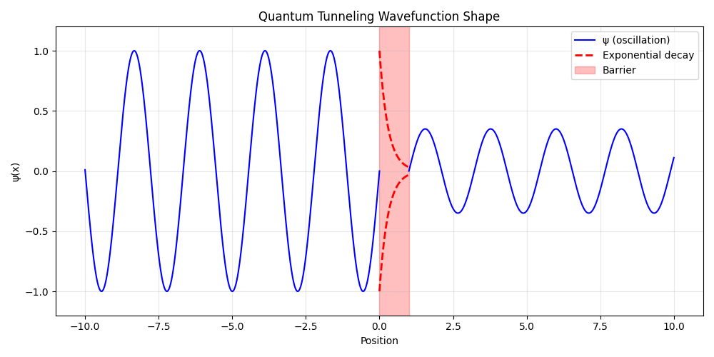
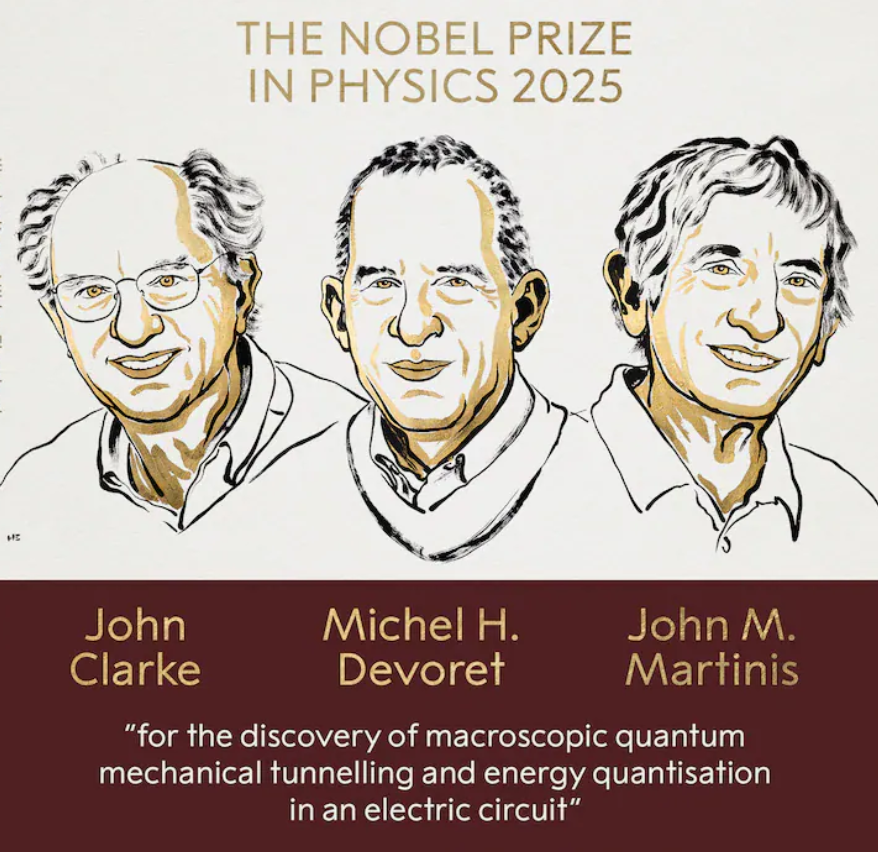
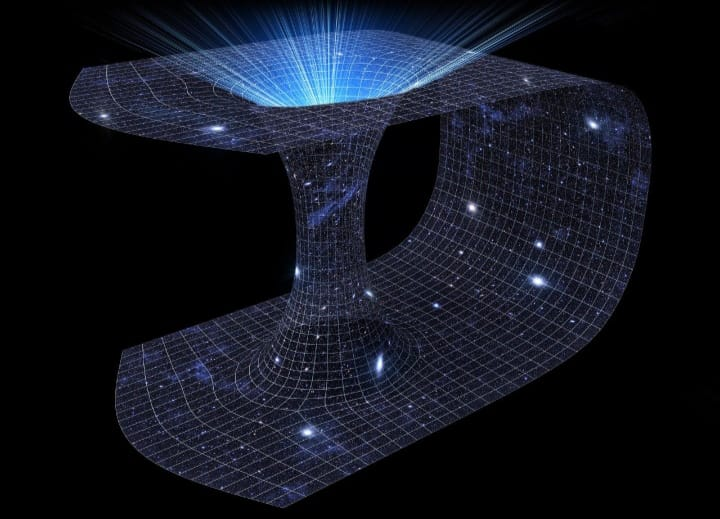
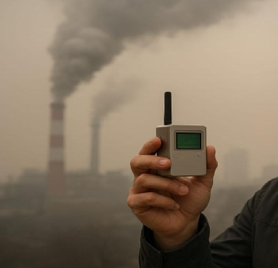
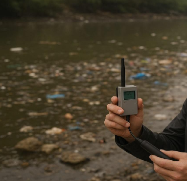
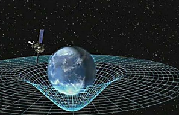
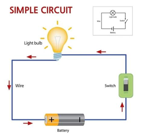
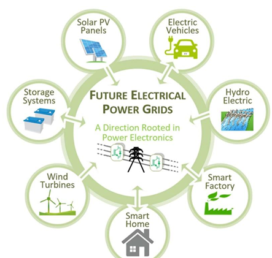

Macroscopic Quantum Mechanical Tunnelling and Energy Quantisation in an Electric Circuit
Introduction:
In classical physics, it is often possible to predict the future behaviour of a system with
great accuracy. However, when we examine the universe from a quantum mechanical
perspective, such certainty disappears. Instead of definite outcomes, quantum mechanics
describes events in terms of probabilities. An event can exist in many possible states until
it is observed, at which point only a single outcome becomes real—an effect commonly known
as the collapse of the wave function.
In 1924, Louis de Broglie introduced the revolutionary concept of matter waves, proposing
that every particle in the universe possesses both particle-like and wave-like behaviour.
This dual nature is responsible for a wide range of quantum phenomena that cannot be
explained using classical mechanics. Electrons, atoms, and even larger systems display
interference, diffraction, and quantisation due to their wave properties.
With advancements in modern technology, physicists are increasingly shifting from classical
models to quantum-based approaches. Although the term “quantum” is usually associated with
microscopic particles, quantum mechanical behaviour is not limited to the microscopic
realm. A remarkable example is the Josephson Junction, a macroscopic device
in which electrons tunnel through an insulating barrier. This demonstrates that quantum
effects, such as tunnelling and energy quantisation, can appear even in systems visible to
the naked eye, bridging the gap between microscopic physics and the macroscopic world.
What is Quantum Tunnelling?
According to classical mechanics, a particle with energy E cannot cross a potential
barrier of height V₀ if E < V₀. For example, an electron inside a solid
should never escape the surface if its energy is below the barrier potential. Classical
theory would predict a strict boundary beyond which the particle cannot exist.
Quantum mechanics, however, tells a very different story. Since particles also behave as
waves, their wave functions extend beyond classical boundaries. Even when E < V₀,
the wave function does not abruptly drop to zero at the barrier. Instead, it decays
gradually inside the barrier, leading to a small but non-zero probability that the particle
can appear on the other side. This phenomenon is called
quantum tunnelling.
Quantum tunnelling plays a crucial role in numerous natural and technological processes.
It enables nuclear fusion inside stars, allows electrons to move between atoms in
semiconductors, and forms the operating principle of devices such as Scanning Tunnelling
Microscopes (STM), Tunnel Diodes, and Josephson Junctions. Without tunnelling, many of the
technologies that shape our modern world simply would not exist.
Macroscopic quantum tunneling
Quantum tunnelling is also seen on the macroscopic level using a special circuit known as a Josephson Junction. In this junction, two superconductors are placed very close to each other and separated by a thin insulating layer.
A superconductor is a conductor cooled to 0 K (or very close to absolute zero). Between 1924–1925, Albert Einstein and Satyendra Nath Bose predicted that at extremely low temperatures, many bosons occupy the lowest quantum state. Thus, quantum effects such as wave interference become visible on a macroscopic scale.
Condensation refers to a large number of particles occupying one or more specific states. For example, in BCS theory, a superconductor forms when Cooper pairs condense.
If two superconductors are separated by an insulating barrier of width x = a, and taking the left edge of the barrier as origin, the system is divided into three regions:
Region-1: \( x < 0 \)
The Cooper-pair wavefunction in this region is:
\[ \psi_1(x) = \sqrt{n_1}\, e^{i(kx + \theta_1)} \]
\[ k = \frac{\sqrt{2mE}}{\hbar} \]
Region-2: \( 0 \le x \le a \)
Inside the insulating potential barrier:
\[ \psi_2(x) = e^{-\kappa x} \]
\[ \kappa = \frac{\sqrt{2m(V_0 - E)}}{\hbar} \]
Region-3: \( x > a \)
The transmitted Cooper-pair wavefunction is:
\[ \psi_3(x) = \sqrt{n_2}\, e^{i(kx + \theta_2)} \]
\[ k = \frac{\sqrt{2mE}}{\hbar} \]

Fig 1: Quantum Tunneling through Joshphson Junction
The Fig-1 represent the tunneling through this junction , this junction also prove that quantum mechanics is not only valid in microscopic lavel but also valied in macroscopic lavel. This year (2025) John Clarke , Michel H. Devoret ,John M. Martinis was awarded by Nobel prize in physics for their experiments demonstrated quantum behavior in electrical circuits large enough to be seen and held, bridging the gap between the microscopic quantum world and macroscopic systems. This discovery has played a key role in the development of quantum technology and quantum computing, allowing physicists to study and apply quantum principles on engineered circuits and devices . Their work builds directly upon earlier ground-breaking research, such as the Josephson effect, and has far reaching implications for both fundamental physics and emerging quantum technologies.

Fig 2: Nobel Prize in Physics 2025 , Source:ndtv.com
References
- Coon, S. A. (2015). Quantum Tunneling. University of Illinois at Urbana-Champaign. Download PDF
- Devoret, M. H., & Martin, R. (2023). Macroscopic superconducting circuits behave quantum mechanically. Physics, 18, 170. View Article
- Wikipedia contributors. (n.d.). Josephson effect. Read Online
Wormholes in the Lab? Quantum Simulation of Exotic Spacetime
Nikitha Guntla
BSc 2nd year
"When Science fiction meets lab reality "
John Mailthot
Introduction:
A "Wormhole" is a theoretical passage that connects two separate regions of spacetime, like a tunnel or bridge through a mountain.In theoretical physics, a wormhole is a solution to Einstein's equation of General Relativity that connects two separate points in spacetime.Think of a tunnel with two mouths, each located at different locations or even different times in the universe. Theoretically, you could enter one mouth and come out the other,skipping vast distances or timelines.
While theoretically possible solutions to physical equations, wormholes have been never observed or detected in the real universe. Wormholes might not just be figments of imagination or products of far future physics anymore. Because Recent advances in quantum computing and simulation suggest that we might be able to model, and even mimic, aspects of wormholes right here in our laboratories. Now before you get too excited about teleporting to another galaxy, here's the catch. Wormholes, as far as we know, are incredibly unstable.They'd collapse almost immediately after forming. Scientists believe that in order to keep one open, you'd need something called exotic matter -a hypothetical type of matter with negative energy density and pressure. That kind of stuff hasn't been discovered yet.So for now, real wormhole travel is still off the table.
Baby Wormhole on a Quantum Computer:
In 2022, researchers from Caltech, Google, Fermilab, and others made headlines by using Google's quantum computer, Sycamore, to simulate a( toy model of a wormhole) kind of baby wormhole .While no real holes in spacetime were created, this experiment marked a major milestone in the field of quantum simulation and theoretical physics.To be clear, they didn't create a real wormhole. But they simulated a simplified version of one.The team used a theoretical model known as the Sachdev Ye Kitaev (SYK) system, which has deep connections to black hole physics and quantum gravity.In their setup, they encoded a bit of quantum information a qubit into one part of an entangled quantum system. That qubid later reappeared in another part, simulating how information might transverse a wormhole. Although this resembles quantum teleportation, the experiment was also inspired by a theoretical idea called the ER=EPR conjecture. EP=EPR is a theory that suggests wormholes (Einstein Rosen bridges, ER) and quantum entanglement (EPR-named after Einstein ,Podolsky, and Rosen again)might actually be two sides of the same coin. Basically, it says if two parts are entangled, they might be connected by a sort of microscopic wormhole. The experiment with Sycamore didn't prove this ,but it did demonstrated that quantum computers can simulate it's predicted behavior, offering a rare and valuable opportunity to test aspects of quantum gravity in a lab setting. That's groundbreaking, considering that quantum gravity -an attempt to unify gravity with quantum mechanics remains one of the biggest unsolved puzzles in physics.
Why Quantum Wormhole Simulations Matter? :
Firstly, quantum simulations like this bridge gap between quantum mechanics( which exlains particles and forces on the smallest scales) and general relativity (which explains gravity), two fundamental theories that currently don't align. If we can simulate aspects of gravity using controllable quantum systems, we may begin to test and refine theories that have previously existed only on chalkboards and in abstract mathematics.
Secondly, these experiments showcase the evolving power of quantum computers. These simulations are a proof of concept that quantum computers can be used for more than just factoring large numbers or optimizing logistics. Once seen mainly as tools for code breaking or solving optimization problems, quantum devices are now stepping into the realm of fundamental physics helping Scientists explore the nature of spacetime itself.
Limits and Misconceptions: No Real Spaceships Yet :
The experiment was conducted with only a few qubits and was based on a highly simplified model. Real spacetime is vastly more complex, and again, just to be super clear: we didn't open a wormhole. We didn't send a scapeship or even a photon across the galaxy. We sent a qubit through a simulation. But still baby steps. Many physicists caution that While the analogy between quantum teleportation and wormholes is mathematically intriguing, it may not generalize to realistic physical scenarios. In short, we're exploring shadows of wormholes not the real thing.

Fig 1: Visual representation of worm-hole, Source:astronomy.com
References
- What are wormholes? An astrophy-sicist explains these shortcuts through space-time View Article
- Physicists observe wormhole dynamics using a quantum computer View Article
Nanosensors: Enhancing Environmental Monitoring
Dharmendra Bania
BSc 1st year
Introduction:
Nanosensors are highly sensitive devices that can detect and measure physical, chemical or biological information and converts it into a usable signal. Environmental monitoring aims to measure various parameters in air, water and soil to ensure the quality of the environment.
Air Quality Monitoring:
Air pollution is one of the most environmental issues, causing millions of premature deaths annually. Nanosensors can detect air pollutants like Nitrogen oxides (NO), Sulphur dioxide (SO2), Ozone (O3), Carbon monoxide (CO) and volatile organic compounds at the parts per billion (ppb) level.

Fig 1: Air Quality Monitor Using Nanosensor
Nanosensors detects greenhouse gases such as Carbon dioxide (CO), methane (CH4) and nitrous oxide (N2O) which contributes to global warming. Graphine based sensors can detect these gases at extremely low concentration, high sensitivity and selectivity make them ideal for environmental monitoring that track global climate parameters.
Water Quality monitoring: :
Water pollution causes from industrial waste, pesticides, heavy metals and microorganism. Water nanosensors can identity harmful substances like lead, arsenic or bacteria in drinking water.

Fig 1: Water Quality Monitor Using Nanosensor
Soil Quality Monitoring:
Nanosensors can detect pathogens in the soil. Soil Contaminates from fertilizers, pesticides, and heavy metals affects crop productivity and food safety. Nanosensors are used in agriculture to detect soil health, nutrient levels and moisture content. These devices can also provide early warnings about soil degradation, allowing timely corrective actions.

Fig 1: Soil Quality Monitor Using Nanosensor
Advantages of Nanosensors:
- Nanosensors can detect pollutants at very low concentrations.
- Nanosensors provide immediate feedback during environmental emergencies.
Conclusion:
Nanosensors is one of the most promising frontiers in environmental science and technology and ability to detect pollutants for maintaining environmental safety and sustainability.
Space-time : The four dimensions
universe
Sunil Kumar Paswan
BSc 1st year
Introduction:
If we want to search deep in the space,the basic physics is applied to all across the universe is
concept of space-time . space and time seem like two completely different things. Space
describes about the area where an object or anything could be present ,it has dimensions such
as length , breath and height , on the other hand time, tells us when things happen: the past,
present, or future. For centuries, scientists believed that space and time were completely
separate, absolute entities-with a universal clock ticking everywhere in the universe at the same
rate, and an unchanging, rigid stage where the events of our universe play out.
But this view changed forever in the early 20th century, thanks to the revolutionary work of
Albert Einstein. Einstein showed that space and time are not independent-they are deeply
connected, and together form a single, four-dimensional continuum: “space-time"
Before Einstein’s work, the prevailing view in physics was that light, as a wave, must travel
through a medium called the “luminiferous aether”. Einstein’s theory of special relativity
eliminated the need for this concept, while his theory of general relativity offered a radically new
understanding of gravity.
Why space-time introduced :
The need to unite space and time came from odd results in physics experiments about motion
and light. For example, the famous Michelson-Morley experiment showed that the speed of light
is always the same-no matter how an observer moves relative to the light source. This was
shocking, and it broke the rules of classical physics .
To explain this, Einstein proposed that measurements of distance and time depend on the
observer's motion. Two people moving at different speeds could disagree about how far apart
two events are, or how much time passes between them. However, everyone would agree on a
single quantity, combining space and time- what's now called the "space-time interval." This
new theory merged three dimensions of space and one of time into a four-dimensional
framework.
The Building Blocks: Events and the Interval In everyday life, we describe the position of an
object using three numbers (for example, coordinates x, y, z). To completely specify an event
(like a thunderclap or lightning strike), we also need to state when it happened (t). In space
time, every “event” is described by four coordinates: (x, y, z, t). But these coordinates alone are
not enough. Different observers, moving relative to one another, will assign different
coordinates to the same event. What stays constant is the “interval” between two events,calculated by: (Δs)² = (cΔt)² – (∆x)² - (Δy)² - (Δz)²Here, c is the speed of light. This quantity, the
space-time interval, is the same for all observers and forms the foundation for Einstein’s theory
of relativity.
New Picture: Relativity and The ‘Fabric’ of Reality :
Einstein's ideas created a new way to look at gravity. Earlier, Isaac Newton pictured gravity as
a "force" pulling toward each other across space. Einstein suggested something more subtle
and beautiful: massive objects, like planets and stars, actually bend and curve the fabric of
space-time. What we feel as gravity is just objects following the curves in this fabric. This idea is
called the "general theory of relativity," and it has been confirmed by experiments, such as the
bending of light near the sun or the detection of gravitational waves.
A common analogy is to imagine space-time as a stretched rubber sheet. Placing a heavy ball
(a planet or star) on the sheet creates a dip, curving the surface. Marbles rolling nearby will
curve around the dip, just as Earth orbits the sun-not because of a mysterious force, but
because the sun has curved space-time around it.

Fig 1: Bending of space febric due to heavy planet
Light Cones, World-Lines, and Causality
Physicists use "light cones" to visualize space-time. Imagine an event (like a firecracker explosion): the light from this event spreads out in all directions at speed c, forming a cone in space-time diagrams. Everything inside the "future light cone" can potentially be influenced by this event; everything inside the "past light cone" could have affected it. Lines drawn through space-time to represent the path of an object are called "world-lines." Every particle or person traces out a unique world-line as they move through the universe.
The Big Picture: Black Holes, Cosmology, and Beyond :
Space-time is central to some of the most fascinating questions in physics: Black Holes: These mysterious objects are regions where space-time is so fiercely curved that nothing, not even light, can escape. The Expanding Universe: The entire universe is described as a vast, "stretching" space-time, with galaxies moving apart as space itself expands. Gravitational Waves: Ripples in space-time, created by violent astrophysical events, were first observed in 2015-confirming Einstein's prediction a century earlier. Contemporary research is probing the very structure of space-time on the smallest scales, searching for a quantum theory of gravity and new, deeper laws.
Conclusion:
Space-time is not just a concept of physics it is the fabric of universe that exists in every part of universe ,it is often referred as fabric of reality and visualised as four dimensional block ,it describes anything happens in the universe along the propagation of electro magnetic waves such as light . It challenges our common-sense ideas, unites gravity and motion, and is central to both our understanding of the cosmos and the technology we use each day.
Electricity: The Lifeline of Modern Civilization
Fariha Ahmed
BSc 1st year
Introduction:
Electricity is one of the most powerful and essential discoveries in human history. It is the invisible force that lights up our homes powers industries, drives communication and fuels modern technology. From the moment we wake up and switch on a light bulb to the time we charge our phones before going to bed, electricity plays a crucial role in our daily lives. Without it, the world as we know it would come to a standstill. This article explores the nature of electricity, its generation, uses, importance, and challenges in the modern world.
What is Electricity? :
Electricity is a form of energy resulting from the movement of charged particles, mainly electrons, through a conductor such as a wire. It can be static, like the spark we fee after rubbing certain materials, or current electricity, which flows continuously through circuits and is used for practical purposes Though electricity has existed in nature for millions of years in the form of lightning or electric eels, humans only began to understand and harness it in the last few centuries. Scientists like Benjamin Franklin, Alessandro Volta, Michael Faraday, and Thomas Edison made significant contributions that transformed electricity from a natural phenomenon into a practical utility.

Fig 1: Simple circuit
There are two main types of electricity:
- Electricity :This is the buildup of electric charge on the surface of an object. You’ve likely experienced static electricity when you rub a balloon on your hair or walk across a carpet and then touch a metal doorknob.
- Current Electricity : This is the flow of electric charge through a conductor. It is the form of electricity that powers our homes and devices.
How Electricity Is Generated:
Electricity is not a primary energy source; it must be generated using other sources of energy. Most electricity is produced in power plants where mechanical energy is converted into electrical energy using generators. The primary sources of energy for electricity generation include:
- Fossil Fuels (Coal, Oil, Natural Gas):These are burned to produce steam, which drives turbines connected to generators.
- Nuclear Energy: In nuclear power plants, nuclear reactions release heat, which also produces steam for turbines.
-
Renewable Energy Sources:
- Hydropower : Uses flowing water to spin turbines.
- Wind Energy :Wind turns the blades of wind turbines to generate electricity.
- Solar Power : Photovoltaic cells convert sunlight directly into electricity.
- Geothermal Energy Uses heat from beneath the Earth’s surface.
With growing concerns about pollution and climate change, there is an increasing shift towards cleaner and renewable energy sources.
Transmission and Distribution:
Once electricity is generated, it must be transported to where it’s needed. This is done through a complex system known as the electrical grid. Here’s how it works:
- Generation:Electricity is produced at power stations.
- Transmission: High-voltage power lines carry electricity over long distances
- Distribution: Substations reduce the voltage, and distribution lines deliver electricity to homes, schools, and businesses.
Maintaining a stable supply of electricity requires a balance between demand (how much electricity people are using) and supply (how much is being generated). This system is managed in real time by utility companies.
Uses of Electricity:
Electricity has countless uses in modern life. Some of the most common include:
- Lighting :Electric lights brighten homes, streets, and cities.
- Heating and Cooling :Electric heaters, air conditioners, and refrigerators help maintain comfortable living conditions.
- Communication :Devices like phones, computers, and the internet all rely on electricity.
- Industry :Factories and workshops use electricity to power machines and tools.
The convenience and versatility of electricity have made it indispensable to both economic development and personal comfort.
The Future of Electricity:
As the global population grows and technology advances, the demand for electricity continues to rise. At the same time, there's a growing push to reduce carbon emissions and combat climate change. This means the future of electricity will involve:
- Cleaner Energy Sources : Expanding the use of solar, wind, and other renewable sources.
- Smart Grids Upgrading the electrical grid to be more efficient and reliable using digital technology.
- Energy Storage Improving battery technology to store electricity for use when generation is low.
- Electrification of Transport Replacing gasoline-powered vehicles with electric ones.
- Decentralized Generation Homes and businesses generating their own electricity using solar panels and other local systems.

Fig 1:Use of electricity
These trends promise a more sustainable and energy efficient future.
Conclusion:
Electricity is a remarkable form of energy that powers the modern world. From its basic principles to its complex infrastructure, electricity enables much of what we take for granted. As we look to the future, balancing our growing energy needs with environmental sustainability will be one of the great challenges—and opportunities of our time. Understanding electricity is the first step toward using it wisely and responsibly.
No Internet Connection